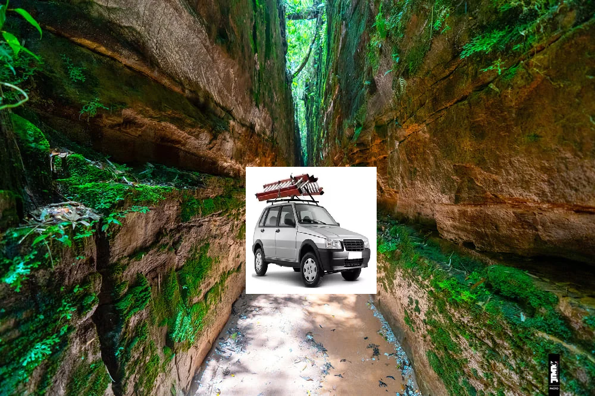

Numa tarde qualquer, encontrei um papel velho dentro de um livro numa biblioteca. Era um mapa que mostrava o caminho para um nebulizador antigo com propriedades mágicas, escondido em algum lugar no sudeste do Brasil. Movido pela curiosidade, fui em busca de encontrar esse misterioso aparelho
Você adentra a grande São Paulo, onde a população e a poluição vivem em harmonia
Você acaba de subir o pão de açucar (lá não havia pães com açucar encima)
Você sem querer acaba de chegar na entrada da cracolândia
Você agora não tem dinheiro suficiente pra voltar ao seu lar e a partir de hoje seus amigos serão os pombos e sua moradia uma caixa de papelão de 1m². (final ruim)
Dentro da fenda você encontra um pirocóptero e um mapa que mostra a localização de um objeto misterioso localizado no estado de São Paulo
Você cai em um lago e milagrosamente sobrevive(agora vai ter que subir o pão de açucar de novo pra deixar de graça)
Você não consegue passar diretamente por aqui.
Em uma fenda você encontra um fiat uno capaz de ir pra qualquer lugar do planeta em menos de 0,69segundos. Dentro dele o gps mostra a rota do objeto misterioso
Você se depara com um prédio abandonado, cheio de mato crescendo dentro dele.
Você se depara com um morador de rua discutindo com um poste (mais um dia normal)
no segundo andar do prédio você encontra uma caixa, você acaba abrindo ela e encontrando o lendário nebulizador que nem mesmo elon musk seria capaz de produzir algo com tamanha tecnologia.(Final bom)
Parabéns, agora você pode está imune a poluição de São Paulo.

Você acha um predio abandonado cheio de mato todo estourado